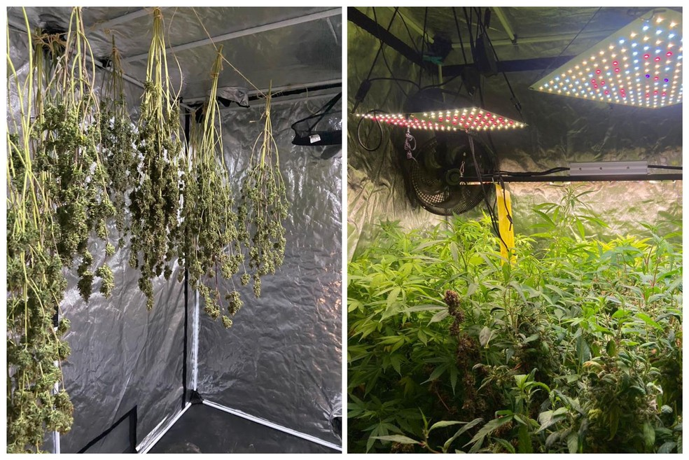
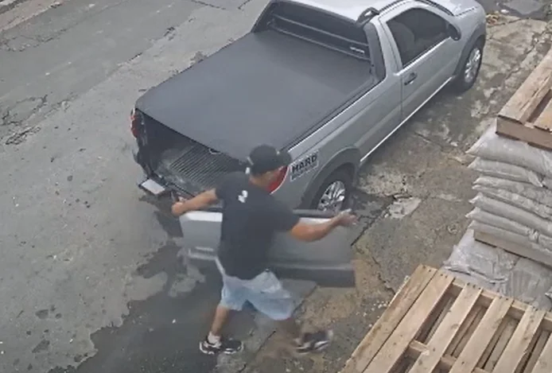

Portal de notícias moralmente questionáveis do Brasil
Notícias recentes
Polícia estoura laboratório usado para cultivo de 'supermaconha' em Sorocaba

A Polícia Militar apreendeu insumos e equipamentos que seriam usados para a produção de maconha e de skunk (a chamada "supermaconha") em uma casa no Jardim Santa Madre Paulina, na zona norte de Sorocaba (SP).
A apreensão foi feita na noite de terça-feira (6), durante a Operação Impacto Força Total, da Polícia Militar. Segundo a PM, a equipe fazia patrulhamento pela região e sentiu um cheiro forte de maconha vindo de uma residência.
No interior do imóvel, foram encontrados mudas de maconha, estufas em funcionamento e equipamentos usados para o cultivo da planta.
Além disso, segundo a PM, havia insumos e equipamentos para preparar a droga para comércio.
Foi localizada, também, uma grande quantidade de skunk em processo de secagem para ser embalada para a venda. A PM informou que apreendeu 33 mudas das drogas, que totalizaram sete quilos de entorpecentes, entre maconha e skunk.
Uma perícia foi feita no local e a ocorrência foi registrada pela polícia para investigação. Não havia ninguém no local.
07/06/2023 09h40
‘Porque não coloca a foto da Anitta?’, reage Sikêra após homem ser preso com maconha embalada em foto do apresentador
O apresentador de televisão Sikêra Júnior foi surpreendido nesta sexta-feira (15), com um homem preso em flagrante por vender drogas com imagens impressas nas embalagens do material ilícito contendo a imagem do dono do hit “Todo maconheiro dá o anel”.
Após o VT que mostra o venezuelano preso junto do material embalado com o rosto do apresentador, Sikêra reagiu de forma espontânea e ainda sugeriu: “Porque não coloca uma foto da Anitta?”.
Vale lembrar que o apresentador é conhecido por ser contra o uso de drogas e na década de 2010 ficou conhecido com a música que significa uma praga contra maconheiros, que virou um grande hit na internet.
Já, a cantora Anitta durante uma live que aconteceu na última terça-feira (12) defendeu a legalização da maconha e disse que acredita que essa é uma forma de gerar empregos e de acabar com as milícias.
16/07/2022
Gangue da tampa volta a agir e furta tampas de caminhonetes em Campinas

A chamada “gangue da tampa” voltou a agir em Campinas, alvejando caminhonetes em diferentes bairros da cidade. A ação é sempre a mesma: os criminosos agem em segundos para retirar a tampa traseira das picapes, deixando um rastro de prejuízos que pode passar de R$ 4 mil
por vítima. Os furtos têm sido registrados em diversos pontos da cidade, incluindo o Parque Fazendinha, Satélite Íris, Vila Mimosa e Jardim do Lago. As imagens de câmeras de segurança mostram a ação rápida dos bandidos, que descem de um carro, removem a tampa em poucos instantes e fogem.
Um dos afetados foi um empresário, que teve a tampa da sua picape furtada enquanto estava na igreja, no Satélite Íris. “Em dois, três minutos, eles pararam, tiraram a tampa e saíram. Foi de dia, num lugar aberto, com ponto de ônibus. Eles não têm medo de nada”, relatou. O prejuízo foi de R$ 3 mil.
A polícia investiga o caso como uma rede organizada. Em setembro, um homem foi preso em São Paulo com 122 tampas armazenadas em seu apartamento, a maioria proveniente do interior. Ele anunciava as peças em sites de comércio online sem nota fiscal.
Especialistas e mecânicos recomendam a instalação de kits anti-furto como forma de prevenção, já que as tampas originais têm um sistema de fixação considerado frágil. Enquanto a polícia tenta identificar todos os integrantes da gangue, a orientação para os donos de caminhonetes é redobrar a atenção.
03/11/2025